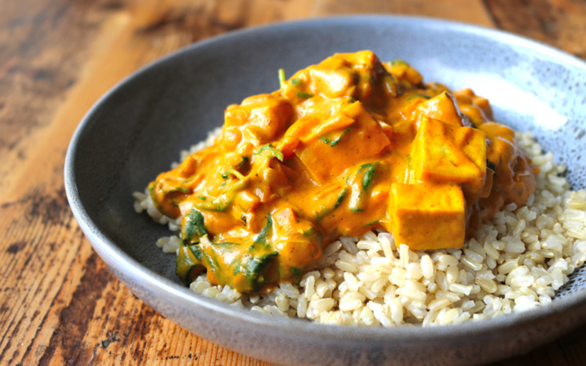

Vegetarian Tikka Masala

Amazing Indian-inspired, tomato-cashew cream sauce!
As a vegetarian, I looooooove Indian food. The spices and flavors are just so
delectable. For a long time I was too intimidated to try to cook Indian dishes
like tikka masala, but now it's one of my favorite things to make!
There's some flexiblity in this recipe, so feel free to adjust it to your taste.
Ingredients:
- 2 tbs ghee (or butter and oil)
- 1 large onion, diced
- 4-5 cloves of garlic, minced
- 1 inch fresh ginger, minced
- 1-2 fresh jalapenos, finely chopped
- 2-3 red or green chilies, finely chopped
- 1 tsp coriander
- 1 tsp cumin
- 2 tsps paprika
- 1/2 tsp cayenne
- 4 large tomatoes, chopped (or 1 14oz cans of diced tomatoes)
- 1 cup dry roasted cashews, chopped (I like to toast raw cashews myself)
- 1 cup of water (or veg broth)
- 1/2 tsp garam masala
- 1-2 tsps sea salt (add salt throughout as needed)
- 2-3 tbs cream
- tofu
- green peas